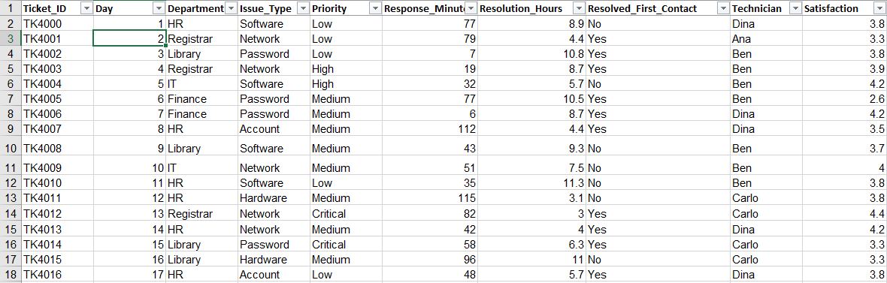
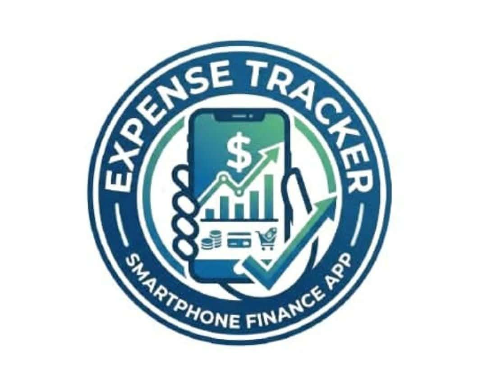

Poultry Feed Stock Tracking with POS Application
Automates inventory management and sales transactions, and improves the accuracy of stock records in poultry feed businesses.
View details
BSIT student and aspiring web developer and mobileapp developer. I design and build websites and mobile applications that are well organized, and easy to use.
Connect
Discover
Hi! I'm EDSEL VILLANUEVA, a fourth-year BSIT student specializing in mobile development and web development.
I am motivated to work in the IT field because I want to apply my technical skills to real-world problems, continue learning new technologies, and develop solutions that can make processes more efficient.
The goal is to become a proficient mobile app developer and web developer that plans and manages IT projects, teams, schedules, and budgets.
Expertise
The languages I use to build websites and applications.
How I store, organize, and retrieve data.
The tools that help me work faster and stay organized.
Support skills that round out my IT knowledge.
Portfolio
Automates inventory management and sales transactions, and improves the accuracy of stock records in poultry feed businesses.
View details
Analyses IT help desk tickets to identify common issues, trends, and areas for improvement in the support process.
View details
An Android app that helps students and employees record daily spending, get AI-assisted insights, and manage their budgets.
View detailsTroubleshooting
Problem: the app crashed when the product grid rendered or updated.
Possible causes: duplicate or unstable item keys.
Diagnostics: read the stack trace for the duplicate-key error and check which field was used as the key.
Solution: use a unique, stable ID per item as the key.
Problem: excess recompositions or stale values in the UI.
Possible causes: derivedStateOf wrapped around non-state or cheap calculations.
Diagnostics: check what state the block reads and whether it actually changes between recompositions.
Solution: use remember with keys or plain state instead.
Problem: a crash tied to hover handling.
Possible causes: a bug in the Compose version the BOM pulled in.
Diagnostics: match the stack trace to the Compose version in use.
Solution: change the BOM version.
Problem: the layout broke or state was lost on rotation.
Possible causes: fixed-size layouts, or state not surviving the configuration change.
Diagnostics: rotate the device and watch for overflow, clipped content, or reset inputs.
Solution: make the layout adaptive and keep state in rememberSaveable or a ViewModel.
Problem: exporting the CSV crashed the app or the share/open action failed.
Possible causes:
• Sharing a raw file:// URI instead of a content:// URI (FileUriExposedException).
• A missing or wrong <provider> entry in AndroidManifest.xml.
• A file_paths.xml that doesn't cover the folder where the file was saved.
• Missing FLAG_GRANT_READ_URI_PERMISSION on the intent.
Diagnostics:
• Read the logcat exception.
• Check that the authority string matches in the manifest and in the FileProvider.getUriForFile() call.
• Confirm the file exists at the expected path before sharing.
Solution: declare the FileProvider in the manifest, add a file_paths.xml that includes the export directory, build the URI with FileProvider.getUriForFile(), and add the read-permission flag to the intent.
What is it? SQL injection happens when an application puts user input directly into a database query. The database can then treat that input as SQL commands instead of plain data. It's a flaw in how the code is written, not in the database itself.
How can it happen?
• The code builds queries by joining strings, for example "SELECT * FROM users WHERE name = '" + input + "'".
• Input from login forms, search boxes, URLs, or API fields isn't validated or sanitized.
• The database account the app uses has more privileges than it needs.
• Detailed database error messages are shown to users, which gives away the table structure.
What are the risks?
• Confidentiality: user records, passwords, and financial data can be exposed.
• Integrity: data can be changed or deleted.
• Authentication bypass: login checks can be skipped.
• Availability: the data or the service can be destroyed or disrupted.
• Consequences: loss of user trust, legal and compliance trouble (including data privacy law), and recovery costs.
How can developers prevent it?
• Use parameterized queries or prepared statements, so input is always treated as data.
• Use an ORM or a safe query API, such as Room's @Query with :param placeholders on Android.
• Validate input type, length, and format, using allow-lists where possible.
• Never build queries by concatenating strings.
Safe pattern (Kotlin/Room):@Query("SELECT * FROM users WHERE name = :name")fun findByName(name: String): User?
What security practices should be implemented?
• Least privilege: the app's database account should have only the permissions it needs.
• Show generic error messages to users and log details privately.
• Hash passwords with bcrypt so stolen data is less useful.
• Keep frameworks and libraries updated.
• Test with code reviews, static analysis, and authorized security testing.
• Use a web application firewall (WAF) as an extra layer, not a replacement for safe code.
• Back up data regularly and monitor logs for unusual queries.
Ready for work
I explain technical ideas in plain, organized language.
View detailsI work well with others and take responsibility for my part.
View detailsI balance school, work and projects by planning ahead.
View detailsWatch my recorded interview to see how I communicate and answer questions.
Play videoBackground
Bachelor of Science in Information Technology
2023 – Present
Production Team Member
Datamex College of saint adeline, 2023 – Present
I have an very interesting skill set like programming and web development.
Download resumeRecognition
Transparency
Get in touch
Looking back
Before entering the BSIT program, my understanding of Information Technology was largely surface-level and consumer-focused. I viewed computers and software primarily as finished tools for gaming, browsing, and basic utilities. I understood little about the underlying architecture, logic structures, database design, or the engineering discipline required to build scalable software systems from scratch.
The most critical takeaway from my academic and practical journey has been the shift from writing isolated blocks of code to designing cohesive, user-centric system architectures. I mastered core software engineering principles, relational database management, clean code practices, and the importance of systematic debugging and documentation. I learned that technology is ultimately a problem-solving medium meant to bridge operational friction with efficient automated workflows.
My growth was cemented through three key pillars: the *POS (Point of Sale) system, ExpenseFlow, and complex *Data Analysis* case studies. The POS Projecttaught me real-time transaction handling, state management, and inventory-database synchronization under strict reliability constraints. ExpenseFlow sharpened my ability to design intuitive financial tracking logic, streamline user input validation, and structure clean data pipelines for transaction logs. The Data Analysis Cases* pushed me to move beyond raw code into deriving actionable business insights, cleaning unstructured datasets, and utilizing analytical frameworks to drive informed decision-making. Together, these projects bridged the gap between theoretical programming and production-ready application development.
The most demanding technical challenge was managing asynchronous data synchronization and state consistency across complex modules—particularly within the POS and ExpenseFlow environments. Handling edge cases during concurrent database updates, resolving race conditions, and ensuring seamless UI responsiveness while processing transaction data required rigorous algorithmic thinking and extensive architectural refactoring.
My skill set has evolved from basic syntax comprehension to full-stack execution and strategic system design, heavily accelerated by modern *AI-assisted development workflows*. By leveraging AI tools as collaborative coding and architectural partners—utilizing structured prompt formulas and iterative debugging—I learned to rapidly prototype, stress-test logic, and optimize codebases with unprecedented efficiency. I have moved from writing fragile scripts to building modular, maintainable applications while sharpening my capacity to evaluate and refine machine-generated solutions.
While my foundation in application development and data processing is robust, I am actively looking to deepen my expertise in cloud-native deployment pipelines, microservices architecture, and advanced automated testing frameworks. Staying ahead in modern software development requires continuous adaptation to scalable deployment and enterprise-grade security practices.
I aim to become a versatile *Software Engineer / Systems Developer* who specializes in building high-performance applications, data-driven solutions, and AI-augmented workflows. I want to work at the intersection of robust backend logic, intuitive frontend user experience, and smart automation, creating software that solves real-world operational bottlenecks with surgical precision.
I am ready because I possess a proven track record of moving projects from concept to deployment—exemplified by my work on the POS system, ExpenseFlow, and data analysis cases. I combine practical coding competence and AI-assisted workflow mastery with disciplined problem-solving, an adaptability to tackle complex technical debt, and a relentless drive to deliver functional, high-impact results.
This document shows how I used AI tools during my projects. It records what the AI helped with, what I checked myself, and where the AI was wrong. The goal is responsible use, not dependence on AI.
AI Usage Log
Reflection
It sped up the portfolio build, helped me debug CSS and JavaScript, drafted project wording, and explained Android concepts I was learning. It also helped me check formula logic in the ticket analysis.
I tested every page in both themes and at mobile width, recalculated the Excel figures myself, checked Android code against the official docs, and ran the fixes in my own project before I trusted them.
I learned to ask for the reasoning behind a suggestion, not just the code. Explanations of concepts like FileProvider and parameterized queries stuck better once I tested them myself.
AI answers sometimes mixed in outdated Android APIs, suggested class names that did not match my stylesheet, and stated things confidently without a source. I treat every AI answer as a draft until I have checked it.
Profile
I am a fourth-year Bachelor of Science in Information Technology (BSIT) student who specializes in mobile and web development. My studies taught me how software is planned, built, and tested, and I have applied that learning in projects such as a poultry feed stock tracking POS app, an IT help desk ticket analysis in Excel, and an Android expense tracker called ExpenseFlow.
My technical strengths are in Kotlin and Android development, supported by web fundamentals in HTML, CSS, and JavaScript. I also work with Python and databases such as MySQL and SQLite. I have debugged real problems, from Compose crashes to preventing SQL injection, and I use GitHub, VS Code, and Android Studio regularly.
My career goal is to become a mobile app developer and web developer who can also plan and manage IT projects, teams, schedules, and budgets. Over time, I want to lead small technical teams that build useful, well-organized software.
The professional values that guide me are curiosity, accountability, and clear communication. I believe good software should be easy to use, and I check my work carefully, including anything I produce with AI tools, before I trust it.
The IT work that interests me most is building mobile applications that solve everyday problems for businesses and individuals, especially tools that keep records accurate and make processes more efficient. I am also interested in data analysis and IT support, because they show how systems behave in real use.